Guia visual · edição 03
Uma raposa.
Muitas possibilidades.
A matriz preservada e novos estudos do corpo, seguindo as referências de anatomia fornecidas.
3níveis de representação
8expressões
3estudos do corpo
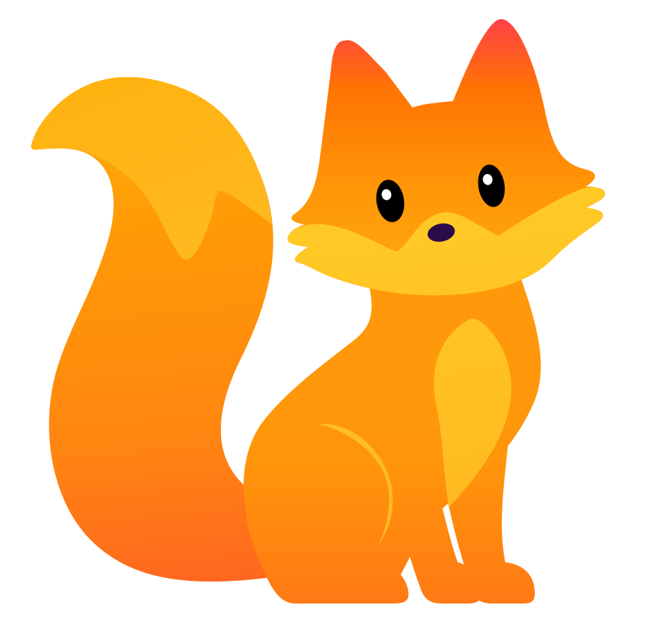
08
Branca e preta
A mesma raposa em duas novas paletas. Rosto, contornos, proporções e expressão preservados.


As novas versões mantêm os detalhes do rosto, do peito e da cauda. Os desenhos individuais têm transparência; os fundos acima servem para visualização.
03
Personagem mestre
Use esta matriz para manter proporções, rosto, cauda e distribuição das cores consistentes.

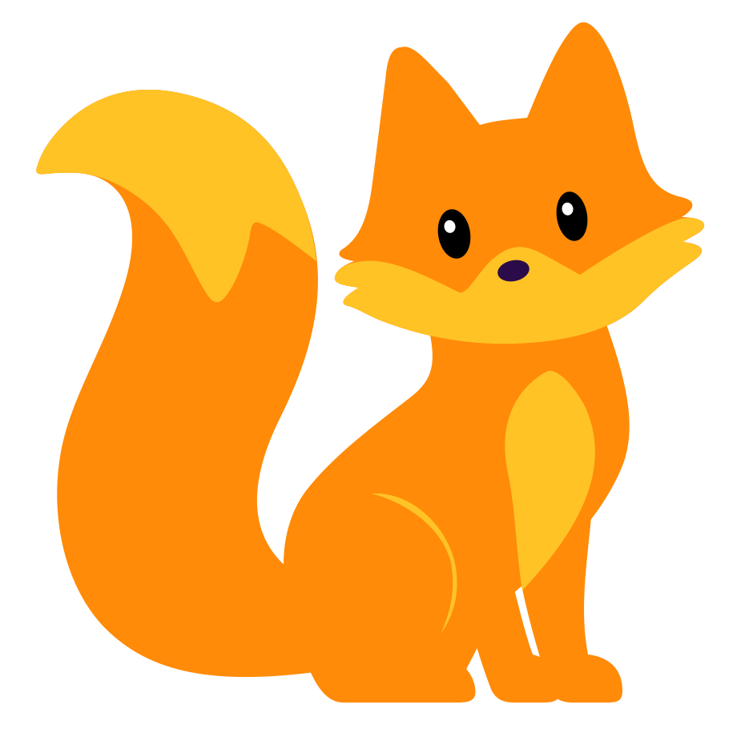


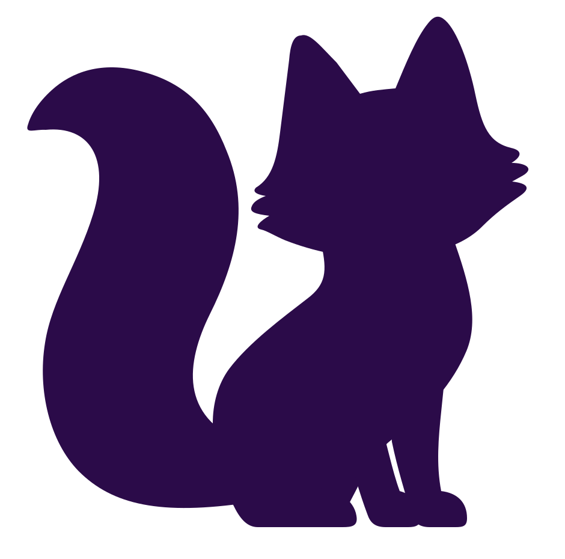


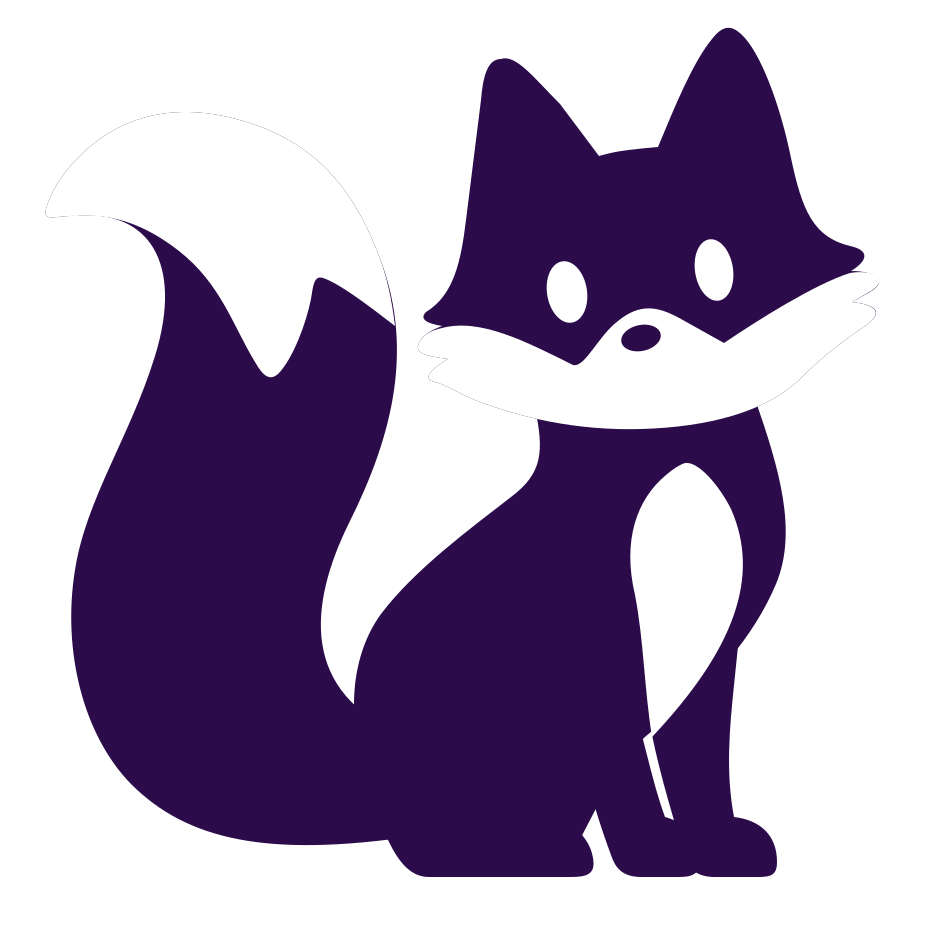




A reversa branca é destinada a fundos escuros. Selecione “Roxo” para visualizá-la. Os PNGs individuais têm transparência real; o quadriculado é apenas o fundo desta galeria.
04
Do favicon ao personagem
A redução elimina gradientes e brilhos, preservando o contorno da cabeça e a máscara do rosto.
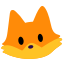


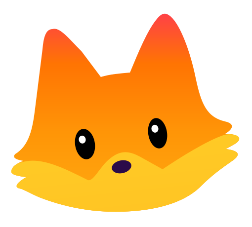




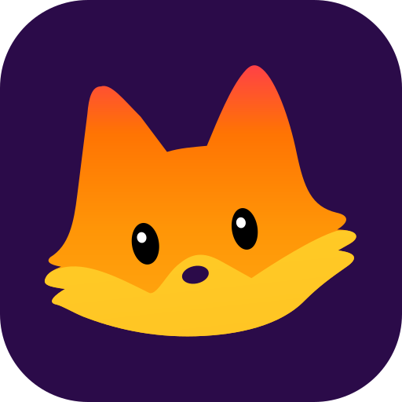


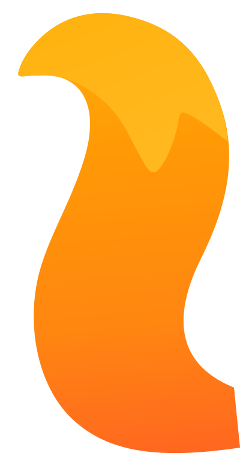


Ícones em tamanho real
Baixar favicon ICO · 16, 32 e 48 px


Em 16 pixels, use o símbolo reduzido. Use a cabeça completa a partir de 64 pixels e o corpo inteiro preferencialmente a partir de 120 pixels.
05
Elementos da matriz
Rosto, máscara, olhos, peito e cauda do personagem principal. As vistas complementares da revisão rejeitada foram retiradas.
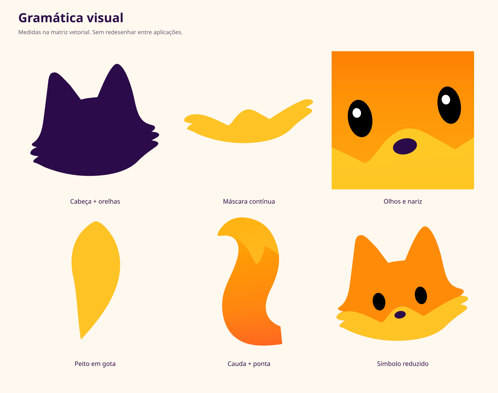
orange
#FF8B08gold
#FFC326coral
#FF5936purple
#2B0B49black
#000000ivory
#FFF8EEElementos constantes
- Orelhas altas, sem desenho interno.
- Olhos pequenos e pretos; nariz oval discreto.
- Máscara dourada contínua e peito em gota.
- Cauda ampla, curva e com ponta dourada.
Regras de uso
- Preserve a proporção ao redimensionar.
- Mantenha uma margem de pelo menos um olho ao redor.
- Use SVG para ampliar e PNG para inserção direta.
- Não adicione boca, cílios, sobrancelhas, pelos ou roupas.
06
Oito expressões
Variações de olhar e inclinação. A geometria da cabeça e da máscara é compartilhada por todos os arquivos.


07
Correção do corpo
Nova base em pé, caminhada e farejo, desenvolvidos a partir das referências enviadas.


Estudos de correção em PNG, com fundo claro. Ainda não são novas matrizes vetoriais aprovadas. A identidade principal permanece no personagem sentado; as poses e vistas rejeitadas foram retiradas desta biblioteca.
Referências e instruções da correçãoQA
Estado da revisão
O corpo está em correção. A matriz principal, os símbolos e as expressões foram preservados.
As verificações de arquivos não validam a anatomia. Os três novos desenhos são estudos visuais gerados com as referências e precisam de avaliação estética antes de orientar a vetorização das próximas poses.
A identidade segue evoluindo.
Matriz editável, estudos do corpo, manual e regras de uso.